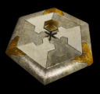

Bastion
From Achron Wiki
| Bastion Tech Building | |
|---|---|
|  | |
| Build | |
| Cost: | 10 |
| Built by: | Foundation |
| Time: | 12s |
| Requirements: | Autodefence |
| Build hotkey: | B |
| Offence | |
| Attack strength: | Beam Spread:
|
| Attack frequency: | 1/2s vs. ground 1/1.5s vs. air With Weaponry: |
| Avg. damag./s. | 9/s vs. ground 12/s vs. air With Weaponry: |
| Range: | 26 vs. all 12 for abilties |
| Attack splash damage: | 0 vs. all |
| Damage modifiers: | 20.4/s to Shin Pulser 15.6/s to Teth Tercher 6.5/s to Mech With Weaponry: |
| Defence | |
| Health: | 440 |
| Sight Range: | 30 |
| Armour: | 19/s(from 13.6/s) from Ground Units upgraded Marine 15.4/s(from 11/s) from Marine 14/s(from 11/s) from Zayin Vir 8.8/s(from 6.8/s) from Shin Vir 6.2/s(from 4.8/s) from Teth Vir 5.5/s(from 4.4/s) from Sepi |
| Ability | |
| Abilities: | Detector
Build Foundation |
| Energy: | 100 |
| Energy recharge: | 2 every 1.78 seconds |
| General | |
| Faction: | Vecgir |
| Footprint: | 12x12 hexagonal |
{kind=link}
{kind=link}
{kind=link}
{kind=link}
{kind=link}
{kind=link}
{kind=link}
The Bastion is the main Vecgir defensive structure. It can also clear Nanites, break TSS, and detect cloaked units.
Contents |
Abilities
Detect
This unit reveals all cloaked units within its Line of Sight to the player and the player's allies with shared vision.
Clear Nanites: 25
The Bastion can clear nanites on a target unit, removing your opponent's control over that unit.